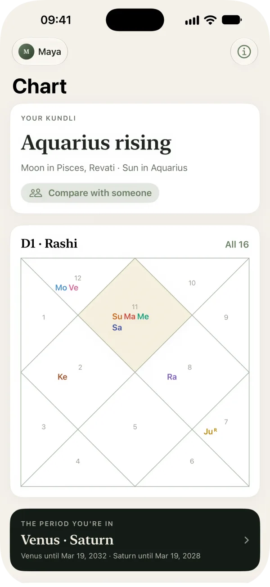
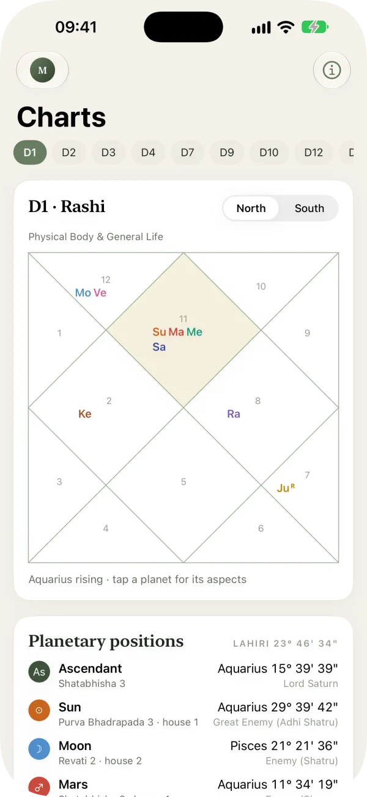
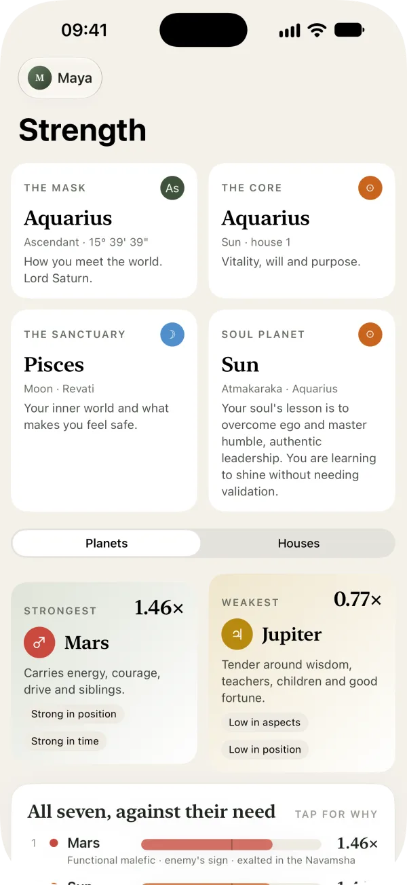
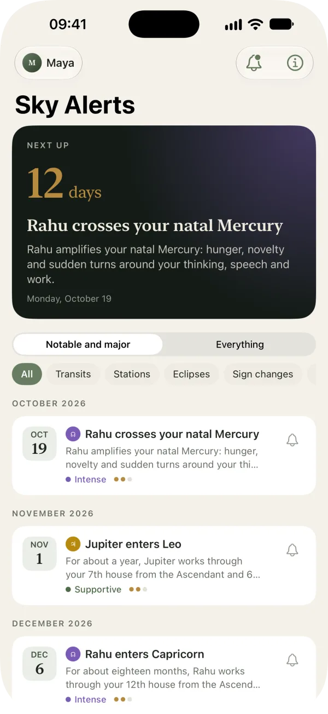
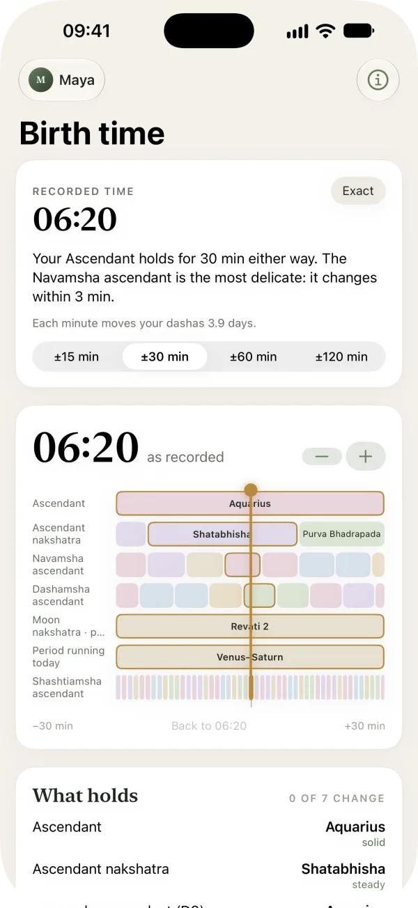
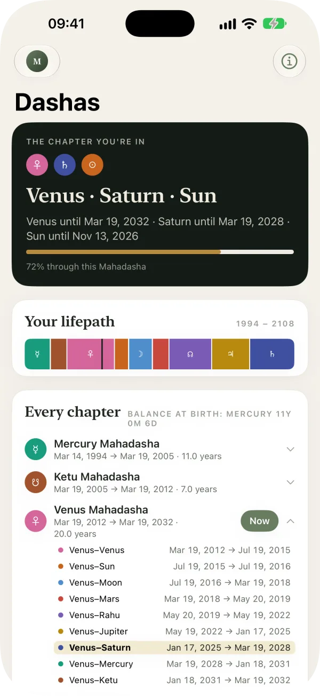
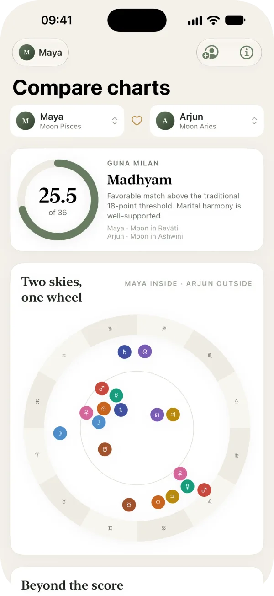
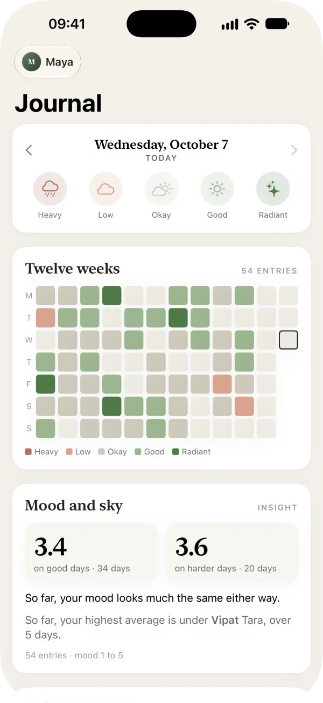

Your kundli, made clear.
Your kundli is your Vedic birth chart. See what it says and why, today's traditional timings wherever you are, and the year ahead. Worked out on your iPhone or iPad from NASA JPL's planetary data, and never sent to us.
Astrology that shows its work.
Today
Today's traditional timings, Rahu Kaal, Abhijit and the planetary hours, worked out for wherever you are.
Calendar
A year of sunrises scored for you, and reminders before the transits, eclipses and dasha changes that involve your chart.
Chart
Your kundli at a glance and all sixteen divisional charts. Strength gives every planet and house its classical score (Shadbala and Bhava Bala), with the reasons.
Birth time
Unsure of your birth time? Move through nearby minutes and see how your chart changes.
Compare charts
Guna Milan, the traditional 36-point compatibility score. A score is not a verdict on a relationship.
Journal
Log your mood in one tap and look back over the weeks. Works with Apple Health.
Beautiful on iPhone, roomy on iPad.








Screens show a sample chart.
Your chart is personal. We don't collect it.
Birth details are personal, especially when they belong to your partner, your parents or your children. We didn't want to hold anyone's, and we wanted the engine open for anyone to inspect and reuse. So we built Nirayana, an open-source engine that works out your chart on your device from NASA JPL's planetary data.
Your chart never reaches us. A few things can reach others, always through you: a place search goes to Apple Maps, a backup to your iCloud, and a chart you share goes where you send it.
Built on NASA JPL's planetary data.
The data JPL uses to navigate spacecraft. Positions agree with JPL to about one arcsecond, the width of a quarter seen from three miles away. Eclipses were checked separately against 1,381 in NASA's catalogs. These checks are about astronomy; what your chart means is yours to judge.
Free, and you're not the product.
No ads, no account, no in-app purchases, and no data to sell.
Your chart, your AI, your choice.
No screenshots, no retyping. Tap Share, pick ChatGPT, Claude, Gemini or Perplexity, and your chart arrives as a prompt written for AI, so the answer starts from your actual chart. Or stay in the app and use Ask the sky, which answers on your device with Apple Intelligence. Your chart goes only where you send it.
Nirayana, open to all.
Our planetary engine, named after the Sanskrit term for the Vedic zodiac, is open source under the MIT license. Anyone can read it and reuse it, including any app that wants to work out charts without collecting them.